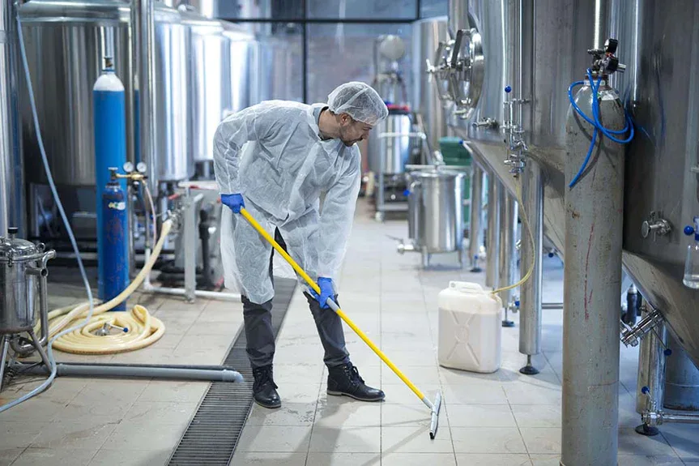

Productieruimtes
Projectmatige reiniging van afgesproken werkzones en bereikbare oppervlakken.
Industriële reiniging
Induclean reinigt productieomgevingen, werkplaatsen, technische ruimtes en magazijnen op basis van een duidelijke opname en planning. Mensen, middelen en werkvolgorde worden afgestemd op de locatie.

Voorbereid aan het werk
Industriële locaties stellen specifieke eisen aan toegang, gebruiksmomenten, bereikbaarheid en werkvolgorde. Daarom brengen we vooraf in kaart welke zones behandeld moeten worden en welke omstandigheden invloed hebben op de uitvoering.
De werkzaamheden kunnen als zelfstandig reinigingsproject worden uitgevoerd of worden afgestemd met steigerbouw, gevelwerk of andere onderhoudsactiviteiten.
Mogelijkheden
De definitieve methode en omvang worden na beoordeling van de locatie bepaald.
Projectmatige reiniging van afgesproken werkzones en bereikbare oppervlakken.
Grondige reiniging rond onderhoud, herinrichting, oplevering of periodieke stilstand.
Gerichte aanpak van technische en moeilijk bereikbare zones na locatiebeoordeling.
Reiniging van vloeren, looproutes en afgesproken opslagzones.
Eindreiniging na onderhoud, montage, renovatie of andere projectactiviteiten.
Afstemming met steigerbouw, gevelreiniging of ander onderhoud op dezelfde locatie.
Waarom Induclean
Werkzaamheden, toegang en werkvolgorde worden vooraf op de omgeving afgestemd.
U weet welke zones en onderdelen binnen het voorstel en de planning vallen.
Reiniging, bereikbaarheid en onderhoud kunnen binnen één project worden afgestemd.
Werkwijze
Heldere afspraken voordat het werk op locatie begint.
We bespreken zones, vervuiling, toegang, planning en aandachtspunten.
Waar nodig beoordelen we de situatie op locatie en bakenen we de scope af.
Na beoordeling ontvangt u doorgaans binnen één à twee werkdagen een voorstel.
De werkzaamheden worden volgens de afgesproken planning uitgevoerd en teruggekoppeld.
Gerelateerde diensten
Vertel om welke omgeving, zones en gewenste planning het gaat. We bespreken of een locatieopname nodig is.